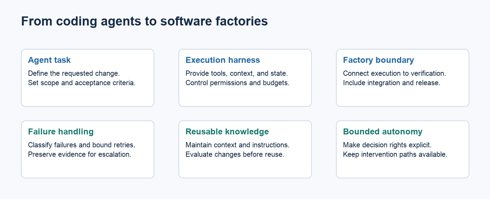
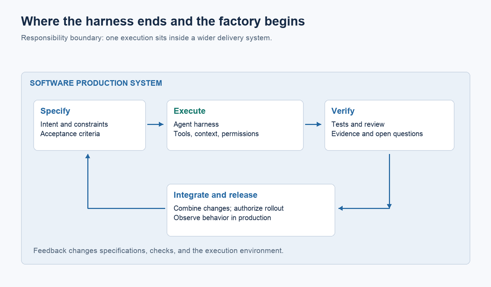
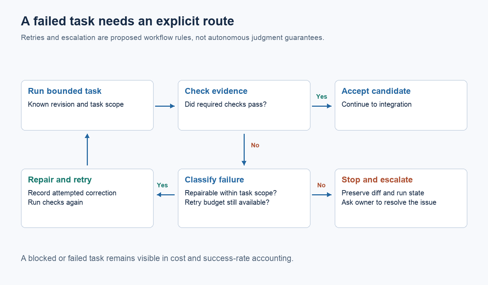

From coding agents to software factories

Key points
- A coding agent performs tasks. A software factory coordinates the work required to turn intent into running software.
- A harness gives an agent its working environment; the factory also owns specification, integration, delivery, and feedback.
- Adding more agents doesn't resolve unclear ownership or weak verification.
- Shared improvements matter when they reduce repeated effort across tasks. Their value needs measurement.
- Humans can remain responsible for consequential decisions in a well-designed factory.
An organization can give every engineer a coding agent and still depend on those engineers to assemble the production process by hand. Someone supplies the context, explains the architecture, checks the result, and shepherds it through release. The tool changes how implementation happens. Much of the surrounding work stays with the individual.
I use *software factory* to describe a shared system that takes responsibility for that surrounding work. It carries a request through specification and execution, establishes evidence about the result, and connects delivery to what happens in production. The term describes an operating model, not a particular product or a promise of autonomous development.
The distinction matters because a better coding agent solves only part of the problem. If the team still rediscovers its testing process on every task, the organization has an improvement it could make regardless of which model it uses.
The engineer is doing more than operating the agent
Consider a routine API change. An engineer finds the clients that depend on it, explains compatibility requirements, and gives the agent a bounded implementation task. After generation, the engineer checks those requirements and coordinates the release with another team.
The agent did useful work. The engineer also supplied the connections between that work and the organization. Calling the whole interaction autonomous hides those connections.
Kumar and colleagues observed 19 developers tackling 33 issues with an in-IDE agent. Their study found greater success with incremental collaboration than with a one-shot approach. This small observational study is no organization-wide productivity estimate, but it shows why developer involvement needs to be understood rather than treated as incidental overhead. Developer–agent collaboration study
A factory makes the repeatable parts of that involvement explicit. It should know how to find the relevant contract tests and who owns the consuming service. Unusual compatibility decisions can still belong to a human.

*Proposed architecture: the harness is one part of the software production system. Informed by SWE-agent and Gu et al..*
Figure sources and methodology
What the harness supplies
The harness is the environment in which an agent works. It provides tools and context, controls permissions, and returns feedback when commands or tests run. Its design can change what a model accomplishes.
The SWE-agent researchers investigated interfaces built for agents, including repository navigation and editing. Their results support taking interface design seriously. Benchmark task performance, however, doesn't establish a complete delivery capability. SWE-agent
A good harness may produce a correct patch. The organization still needs to decide whether the patch serves a worthwhile request, can be integrated with other work, and is ready to release. Those responsibilities define a wider boundary.
| Responsibility | Agent harness | Software factory | | --- | --- | --- | | Working context | Makes relevant material available to an execution | Maintains sources, ownership, and ways to find authoritative context | | Execution | Runs tools within a bounded environment | Chooses work and manages dependencies across executions | | Verification | Returns checks and feedback | Defines required evidence and decides how failures are handled | | Delivery | May create a patch or pull request | Integrates changes and controls release | | Learning | Records a run | Turns recurring failures into maintained improvements |
These are proposed responsibilities. A team can distribute them across existing systems; it doesn't have to build one enormous application.
A factory needs a route through failure

*Proposed failure routing, informed by Agentless and Bainbridge. Retry policy and ownership must be defined by the team.*
Figure sources and methodology
A successful demonstration follows a clean path from request to patch. A production system must also handle the test environment being unavailable, a requirement contradicting the repository, or two individually valid changes breaking when combined.
Work needs a recorded state and an owner at each of those points. If verification fails, does the system retry? What information goes into the retry? At what point does someone investigate? If a task is blocked on a product decision, it should stop consuming execution time.
More agents won't answer those questions. Parallel work can help with genuinely independent tasks, but it also creates more results to reconcile. A factory should coordinate only as much parallel execution as it can verify and integrate.
Agentless offers a useful check on the appetite for orchestration. Its researchers used a structured localization, repair, and validation process to solve benchmark issues without an open-ended agent loop. That result doesn't establish universal superiority, but it argues for testing simple workflows before adding complexity. Agentless
Make repeated knowledge reusable
When an engineer discovers a reliable way to reproduce a class of failures, that discovery should be easy to reuse. It might become a test fixture, a diagnostic command, or a short guide linked to the relevant subsystem.
The move from personal knowledge to shared infrastructure is selective. Some judgments depend on circumstances and resist encoding. Other knowledge is stable enough to execute: the supported build command, a dependency boundary, or a compatibility check.
Merely collecting that knowledge doesn't make it useful. A recent evaluation of AGENTS.md files found that context files did not generally improve success in the tested settings and increased inference cost. Shared guidance needs evidence that it helps. Repository context study
Give maintained knowledge an owner. Record why a check exists. Remove obsolete instructions. Otherwise the factory becomes another source of contradictory advice.
Start with one class of work
A dependency update is a reasonable candidate when the team already has reliable checks and a manageable rollback. Define the supported update scope, supply a reproducible environment, and record the evidence required to accept the change. Keep a person responsible for cases outside that boundary.
Then compare the whole process with the old one. How much engineer time was saved? Did review effort increase? What failed after release? Count configuration and maintenance costs alongside execution costs.
The economics of complementary investment matter here. Brynjolfsson, Rock, and Syverson's productivity J-curve framework explains why new technology may require investment in processes before returns appear. It does not guarantee that a software factory will pay for itself. Productivity J-curve
Autonomy is a separate decision
A factory can have humans approve a design and release every change. It can also allow narrowly defined tasks to proceed with little intervention. Both can be sensible arrangements.
The dark factory, in which business intent enters and most intermediate work happens autonomously, is an extreme on that continuum. It is useful as a thought experiment. It is a poor prerequisite for improving the delivery process today.
The next investment should follow a repeated cost or failure the team can identify. Make the context reliable. Make a check reproducible. Make integration failures visible sooner. Then establish whether the improvement saved effort across subsequent work.
A software factory earns the name when those improvements remain available after the engineer who discovered them closes their laptop.
---
Research and scope
This article proposes a production-system definition of a software factory. The studies cited support particular concerns about interfaces, collaboration, and workflow design; they do not demonstrate the financial return of the proposed architecture. See References.md for source notes and the outline review.